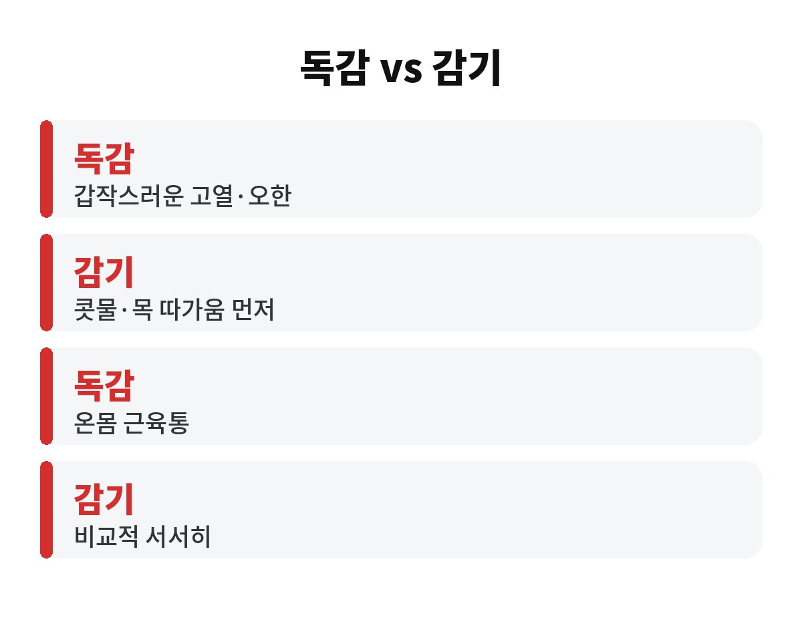
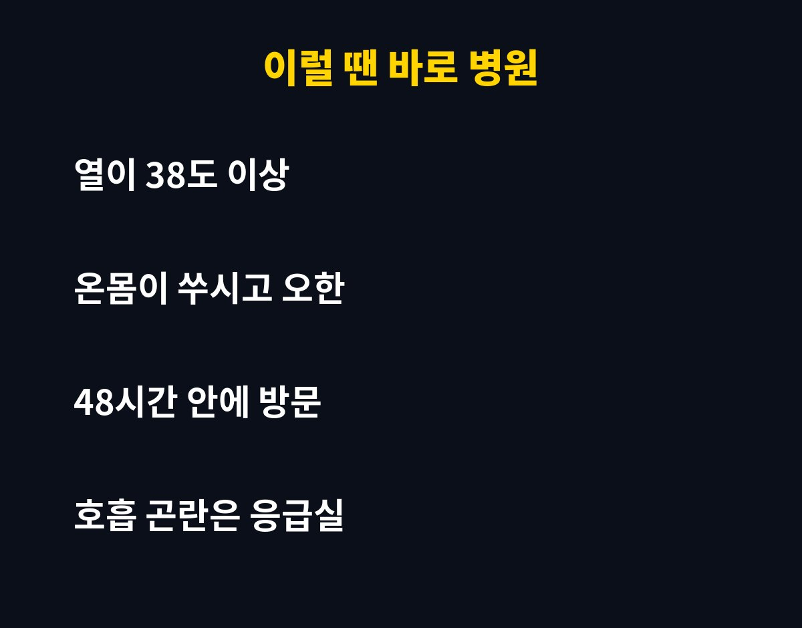

독감 초기증상은 갑자기 오르는 38도 이상 고열과 온몸 근육통이고, 항바이러스제는 증상이 시작된 뒤 48시간 안에 먹어야 효과를 기대할 수 있어요. 이 시간이 지나면 약의 도움을 받기 어려워집니다.
그런데 "그냥 감기겠지" 하고 출근했다가 하루 이틀 훌쩍 보낸 적, 직장인이라면 한 번쯤 있지 않나요? 그 하루가 회복 속도를 갈라놓는 이유가 궁금하시죠.
감기는 보통 목이 따끔하고 콧물이 나면서 서서히 시작해요. 반면 독감은 아침까지 멀쩡하다가 오후에 갑자기 열이 오르고, 오한과 근육통이 몰려오는 게 특징이에요. 몸이 두들겨 맞은 것처럼 아프다는 표현이 괜히 나온 게 아니랍니다.
독감 초기증상을 정리하면 이렇습니다.

독감 바이러스는 증상이 시작되고 이틀 정도 사이에 몸속에서 급격히 불어나요. 항바이러스제는 바이러스를 없애는 약이 아니라 늘어나는 속도를 늦추는 약이라, 초반에 먹을수록 열이 내리는 기간이 줄고 합병증 위험도 낮아질 수 있어요.
그래서 "하루만 더 참아볼까" 하는 마음이 제일 위험합니다. 참는 사이 시간이 흘러 약의 효과를 볼 기회를 놓치는 거죠. 처방은 의사의 진료가 있어야 받을 수 있으니, 증상이 의심되면 병원부터 가는 게 순서예요.
열이 있는 상태로 출근하면 본인도 힘들고, 같은 사무실 동료에게 옮길 가능성도 높아요. 독감은 기침이나 재채기 속 침방울로 퍼지기 때문에 한 공간에 오래 있는 직장 환경에서는 순식간에 번지거든요.
열이 내린 뒤에도 바로 정상 출근하기보다는, 의료진 안내에 따라 충분히 쉬는 게 좋아요. 마스크는 필수고, 손 씻기도 평소보다 자주 챙기세요.

38도 이상의 열이 나면서 근육통이 심하다면 미루지 말고 가까운 병원을 찾으세요. 특히 숨이 차거나 가슴이 아프고, 의식이 흐릿하다면 응급실에 가야 해요. 어린아이, 65세 이상 부모님, 임신부, 만성질환이 있는 분은 더 서둘러야 합니다.
집에서는 물을 충분히 마시고, 열이 오르면 몸을 따뜻하게 하되 땀이 나면 마른 옷으로 갈아입으며 쉬는 게 도움이 돼요. 해열제는 복용법을 지켜서 드세요.
예방접종을 아직 안 하셨다면 올가을이 마지막 기회일 수 있어요. 오늘 몸이 으슬으슬하다면 퇴근 후가 아니라 지금 병원에 전화부터 해 보는 건 어떨까요? 도움이 되셨다면 구독하고 다음 글도 받아보세요.
※ 이 글은 일반적인 건강 정보이며 진단·치료를 대신하지 않습니다. 증상이 있으면 반드시 전문의 상담을 받으세요.